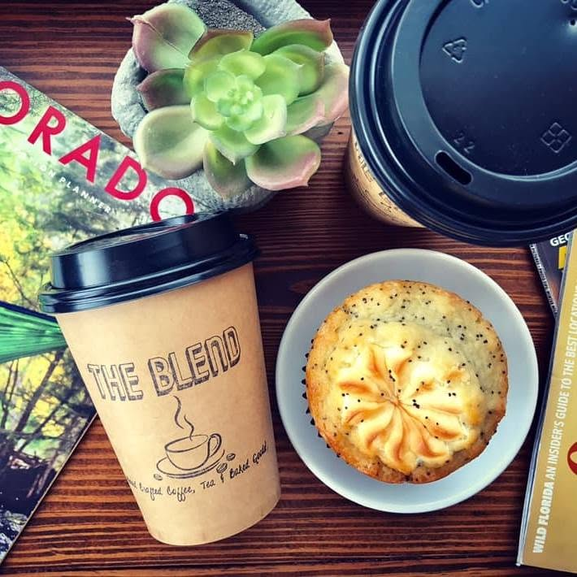
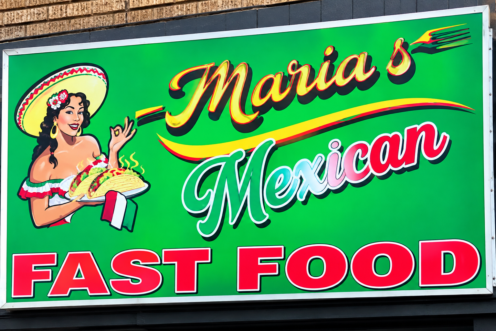
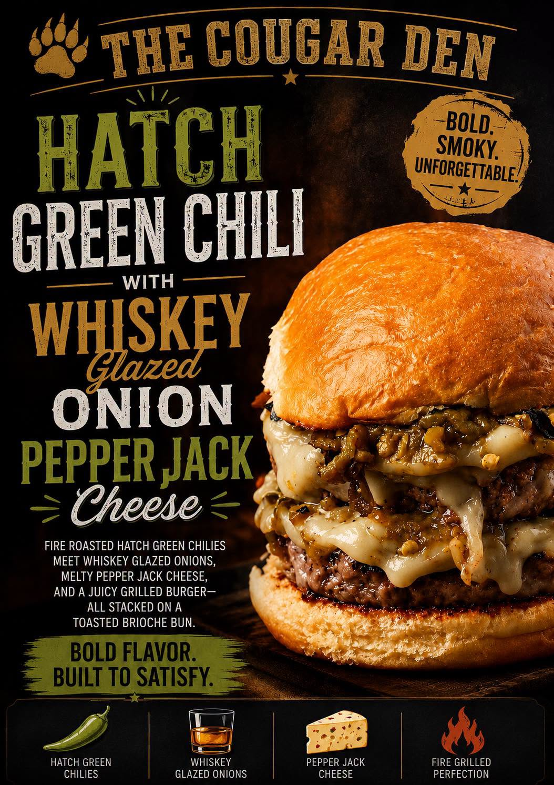

Historic Attraction
Kit Carson County Carousel & Museum
This fully operating 1905 Philadelphia Toboggan Company carousel is a National Historic Landmark.

Colorado's eastern gateway combines remarkable prairie history, one-of-a-kind attractions, locally owned food and shopping, and family-friendly places worth leaving the interstate to discover.
This fully operating 1905 Philadelphia Toboggan Company carousel is a National Historic Landmark.

Explore 6½ acres with 21 restored turn-of-the-century buildings, historic collections and seasonal entertainment.

A road-trip break with a rocket-themed playground, splash pad, picnic areas and amphitheater.
The classic Colorado state-line photo stop about 12 miles east of Burlington.

A shaded local park with a large wooden castle-style playground, swings and picnic shelters.

An upscale-casual local eatery featuring handcrafted cuisine and locally sourced ingredients when available.

A small local coffee stop known for handcrafted coffee, tea, baked goods and boba drinks.
A local food-truck stop serving breakfast burritos, carne asada fries and barbacoa tacos.

A family Mexican restaurant highlighted for burritos, salsa and homemade-style food.

Part eatery, part community game room, with pool, arcade games and bingo.
A Burlington treasure-hunting stop for antiques, collectibles and giftable finds.
A specialty shop offering handcrafted aromatherapy and apothecary products, essential oils, teas, herbs and handmade goods.
The annual county fair is typically held in late July at the fairgrounds.
Old Town Museum hosts summer can-can shows and gunfights plus special seasonal events.
Check Old Town Museum →